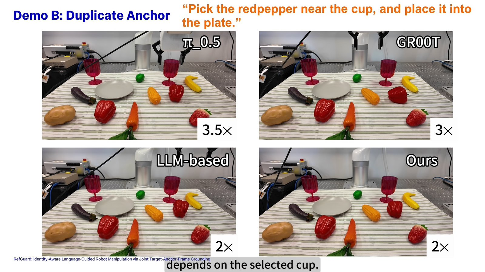
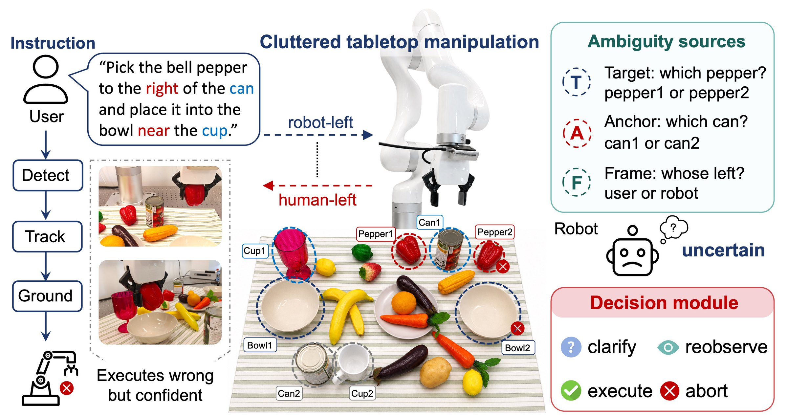
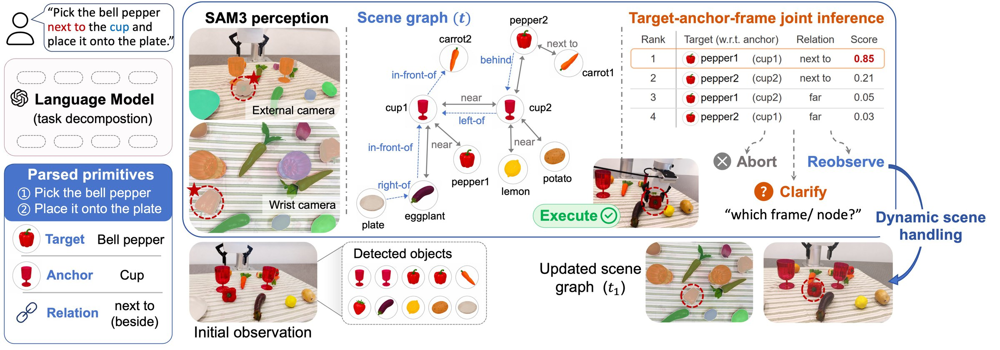
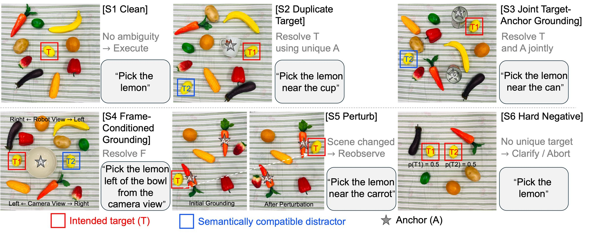
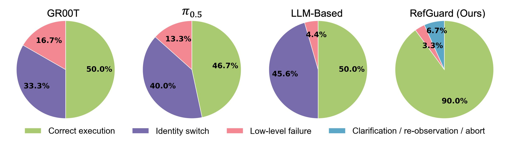
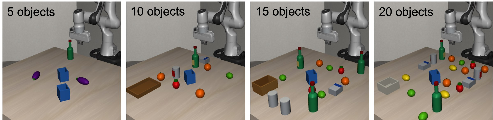

Late commitment for language-guided manipulation: execute when the referent is certain, and clarify, reobserve, or abort when it is not.

Overview and real-robot demonstrations on a UF850 arm: duplicate targets, duplicate anchors, and reference-frame ambiguity, compared against π0.5, GR00T, and an LLM-based pipeline.
Vision-language-action models have substantially advanced language-guided robot manipulation, yet reliable execution still hinges on identifying which physical object an instruction refers to. In cluttered scenes containing repeated objects, ambiguous anchors, or frame-dependent spatial terms, a robot can execute a geometrically valid action on a semantically compatible but unintended instance. We call this failure an identity switch.
The referent is jointly determined by three coupled latent variables, the target, the anchor, and the reference frame, so committing to any one of them before execution turns residual ambiguity into a silent and irreversible error. RefGuard delays commitment by maintaining a joint posterior over all three variables. It builds a frame-conditioned object-centric scene graph from RGB-D observations and routes the posterior through a decision policy that executes, clarifies, reobserves, or aborts.
For "pick the bell pepper to the right of the can and place it into the bowl near the cup", the referent depends on a chain of coupled choices: which pepper, which can, which bowl, and whether "right" is read in the user's or the robot's frame. Existing VLA policies, LLM-driven pipelines, and VLM grounders commit early: they pick a single most likely target, anchor, and frame, or fold the choice implicitly into predicted actions. In cluttered scenes this collapses residual ambiguity before execution, and the action is carried out with no record that its referent was uncertain.
Duplicate or visually similar instances match the same category and attributes. Detection and tracking preserve assigned identities but do not decide which identity the language intended.
When the anchor is also duplicated, it cannot be identified in isolation. Fixing the anchor first and then searching for the target is exactly the early commitment that produces wrong-instance executions.
Directional terms such as "left" or "in front of" change meaning between the robot frame and the user's viewpoint, so the same target–anchor pair can imply different physical goals.

RefGuard reformulates identity preservation as joint posterior inference over the target, the anchor, and the reference frame, replacing a top-1 referent with late commitment at the grounding-to-action interface. Learned LLM/VLM grounders remain complementary: they can supply interpretations or hypothesis scores, while RefGuard preserves joint uncertainty over the physical instances and verifies it before execution.

GPT-4o decomposes the instruction into an ordered sequence of pick/place primitives, each with a target phrase, anchor phrases with relations, a reference-frame cue, and action constraints. The parser never binds phrases to detected instances.
From an external and a wrist RGB-D camera, SAM 3 perception yields object nodes with geometry, semantics, and uncertainty. A frame-independent layer stores distance, contact, and containment; a frame-conditioned layer stores directional offsets under each candidate frame.
Each row is one complete interpretation (target, every anchor, frame), scored by object evidence, relation evidence, a frame prior, and action feasibility. Invalid rows are pruned, weights are normalised, and a target belief is obtained by marginalising over rows.
Execution commits the target but keeps high-weight anchor and frame hypotheses for placement. A pre-execution contract check verifies visibility, poses, and feasibility before any motion, and the graph is rebuilt after each primitive so the next referent is re-grounded.
The target marginal, its top-two margin, its entropy, and an action-equivalence test over the top hypotheses are mapped to one of four decisions. Thresholds were selected on 30 development episodes and then frozen.
Belief concentrates on a single feasible interpretation and the planner finds a safe action.
Top hypotheses disagree on target identity, anchor assignment, or frame, and the disagreement implies different physical goals.
Belief is too flat, perception is weak, or poses are stale. The scene is re-captured and the query re-grounded.
No compatible target, anchor, or satisfiable action constraint remains under any available frame.
Six settings separate ordinary manipulation ability from identity-aware grounding. The first contains no ambiguity; the others progressively introduce duplicate targets, duplicate anchors, explicit frame cues, execution-time perturbations, and irreducibly ambiguous instructions where the correct behaviour is to defer.

"Pick the lemon." A single referent; measures task success and checks that the decision mechanism does not slow ordinary execution.
"Pick the lemon near the cup." Two lemons, one cup. The relation to the unique anchor must decide the target.
"Pick the lemon near the can." Two lemons and two cans; exactly one joint assignment satisfies the relation measured from RGB-D geometry.
"Pick the lemon left of the bowl from the camera view." The robot and camera frames imply different instances; ignoring the cue acts on the wrong one.
Targets are swapped, anchors moved, or distractors inserted after grounding. The pre-execution check must catch the change and re-ground.
"Pick the lemon" with two identical lemons. The correct behaviour is to clarify or abort, never to execute an arbitrary choice.
We compare RefGuard with two VLA policies fine-tuned on 300 UF850 teleoperation demonstrations, GR00T and π0.5, and with an LLM-based pipeline that shares RefGuard's perception and planner but commits to a single target before planning. 30 trials per method and setting.
| Method | S1 CleanTask success ↑ | S2 Dup-TIdentity-switch rate ↓ | S3 Dup-T/AIdentity-switch rate ↓ | S4 Frame-cond.Identity-switch rate ↓ | S5 PerturbRecovery ↑ | S6 Hard-neg.Correct defer ↑ |
|---|---|---|---|---|---|---|
| GR00T | 83.3%25/30 | 52.0%13/25 | 40.0%10/25 | 28.0%7/25 | 40.0%12/30 | N/A |
| π0.5 | 90.0%27/30 | 42.3%11/26 | 36.0%9/25 | 59.3%16/27 | 46.7%14/30 | N/A |
| LLM-based | 90.0%27/30 | 41.4%12/29 | 44.4%12/27 | 56.7%17/30 | 0.0%0/30 | N/A |
| RefGuard (Ours) | 93.3%28/30 | 0.0%0/28 | 0.0%0/27 | 0.0%0/26 | 86.7%26/30 | 100.0%30/30 |
The identity-switch rate for S2–S4 is execution-conditional (switches over executed trials), so its denominator differs across cells. The baselines expose no explicit defer decision, hence N/A on S6.

Over 30 instructions with 2 to 6 primitives, RefGuard reobserves and re-grounds after every step. It completes 114/120 primitives and 25/30 full sequences with 0/120 identity switches and 3/120 deferrals. On two held-out object categories it completes 68/72 primitives with no identity switch. At 30 post-action checkpoints where the next referent must be re-bound after the scene has changed, it re-grounds correctly in 28/30 cases, versus 10/30 for a control that locks the initial binding.
A development-disjoint, LIBERO-style procedural suite with 20 object categories and 5 to 20 objects per scene (2,400 solvable and 800 hard-negative episodes) tests whether the matched-control gap persists as clutter grows. RefGuard and Hard-A/F receive identical observations and the same four-way decision interface.

@article{wei2026refguard,
title = {RefGuard: Identity-Aware Language-Guided Robot Manipulation via Joint Target-Anchor-Frame Grounding},
author = {Wei, Lan and Lu, Kangyi and Wang, Yongchen and Bi, Chenmeng and Chen, Qi and Niu, Hanlin and Yeung, Yip Fun and Zhang, Dandan},
journal = {arXiv preprint},
year = {2026}
}